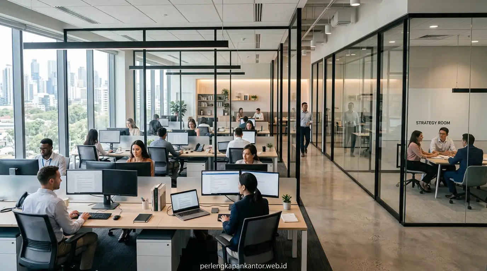

Bandingkan Partisi Ruangan Gypsum vs Partisi Kaca Tempered
Perbandingan partisi gypsum vs kaca tempered terletak pada peredaman akustik kedap suara, transmisi pencahayaan alami ruangan, estetika desain modern, fleksibilitas jalur instalasi kabel, dan total biaya proyek.


Pemilihan material sekat ruangan antara gypsum dan kaca tempered menentukan efisiensi ruang kerja, pencahayaan alami, dan tingkat privasi audio visual antar-divisi.
- Efisiensi Anggaran: Partisi gypsum rangka baja ringan menawarkan biaya per meter persegi lebih ekonomis dan pengerjaan cepat untuk dinding masif.
- Estetika & Pencahayaan: Partisi kaca tempered 10–12mm memaksimalkan distribusi cahaya alami, membuat ruangan terkesan luas dan mewah.
- Akustik & Privasi: Gypsum dengan insulasi rockwool sangat unggul meredam suara rapat rahasia hingga 45 dB.
- Solusi Hybrid Modern: PerlengkapanKantor melayani desain komposit semi-gypsum kaca dengan penawaran harga kontraktor terbaik di Jakarta.
- Mengapa Pemilihan Material Sekat Ruangan Kantor Menjadi Keputusan Krusial Perusahaan?
- Apa Saja Keunggulan dan Karakteristik Partisi Dinding Gypsum Rangka Baja?
- Kapan Partisi Kaca Tempered Menjadi Solusi Terbaik untuk Ruang Rapat & Eksekutif?
- Tabel Komparasi Menyeluruh: Partisi Gypsum Akustik vs Partisi Kaca Tempered 10-12mm
- Bagaimana Desain Partisi Hybrid Mampu Memberikan Keseimbangan Privasi dan Transparansi?
- Mengapa Mempercayakan Pemasangan Partisi Kantor kepada Tim Ahli PerlengkapanKantor?
- FAQ: Pertanyaan Seputar Pemasangan Partisi Kantor & Estimasi Biaya
- Kesimpulan Praktis
Mengapa Pemilihan Material Sekat Ruangan Kantor Menjadi Keputusan Krusial Perusahaan?
Pemilihan material sekat ruangan menentukan kenyamanan akustik kerja, sirkulasi pencahayaan matahari, fleksibilitas penataan ruang di masa depan, serta citra profesional brand korporat.
Ketika perusahaan melakukan ekspansi kantor baru atau merenovasi tata letak ruang operasional, pembagian zona kerja menjadi tantangan arsitektural tersendiri. Ruang kerja terbuka (open space) memang mendorong komunikasi cepat, namun tanpa sekat pembatas yang memadai, polusi suara dan hilangnya privasi visual dapat menurunkan konsentrasi tim hingga ke level yang mengkhawatirkan.
Berdasarkan laporan riset dari Asosiasi Kontraktor Interior Indonesia (AKII, 2024), renovasi partisi ruangan yang salah perhitungan dapat menyebabkan pembengkakan biaya perbaikan AC dan kelistrikan hingga 28% akibat sirkulasi udara yang terhambat. Sementara itu, studi Workplace Acoustics & Employee Productivity (2025) menunjukkan bahwa kebisingan percakapan di area kerja tak bersekat menyumbang 31% penurunan fokus kerja staf analitis.
Apa Saja Keunggulan dan Karakteristik Partisi Dinding Gypsum Rangka Baja?
Keunggulan partisi gypsum mencakup isolasi suara maksimal, kemudahan penanaman pipa kabel elektrik di dalam rongga dinding, tahan api, dan biaya per meter persegi yang sangat terjangkau.
Partisi dinding gypsum dengan rangka metal stud (baja ringan galvanis) merupakan standar emas untuk pembatas ruangan tertutup di perkantoran:
Rongga dinding dapat disisipi rockwool/glasswool 50 kg/m3 untuk menghasilkan peredaman suara hingga 40–45 dB, ideal untuk ruang rapat rahasia dan direksi.
Kabel LAN internet, stopkontak listrik, dan saklar lampu ditanam sempurna di dalam dinding tanpa perlu kabel ducting luar yang mengganggu estetika.
Permukaan gypsum dapat dicat senada warna korporat perusahaan atau dilapisi wallpaper mewah dan panel acoustic wood slat.
Harga sekat ruangan gypsum kantor jauh lebih bersahabat untuk luasan dinding besar dibanding material kaca utuh.
Kapan Partisi Kaca Tempered Menjadi Solusi Terbaik untuk Ruang Rapat & Eksekutif?
Partisi kaca tempered menjadi solusi ideal ketika ruangan membutuhkan kesan luas, pencahayaan alami maksimal, konsep transparansi modern, dan keamanan anti-pecah tinggi.
Kaca tempered 10 mm atau 12 mm telah melalui proses pemanasan termal ekstrem hingga 700°C lalu didinginkan mendadak, menjadikannya 4 hingga 5 kali lebih kuat dibandingkan kaca biasa. Jika pecah karena benturan keras, kaca akan hancur menjadi butiran tumpul kecil (pebble-like fragments) yang tidak melukai karyawan.
Penggunaan partisi kaca frameless di ruang meeting atau ruang kerja eksekutif memberikan efek visual tanpa batas (seamless), membuat ruang kantor sempit terasa dua kali lebih lega dan berkelas. Untuk menjaga privasi dokumen presentasi, kaca dapat dilapisi stiker sandblast bermotif garis elegan atau logo perusahaan.

Partisi kaca tempered frameless menghadirkan atmosfer ruang rapat korporat yang elegan, transparan, dan modern.
Tabel Komparasi Menyeluruh: Partisi Gypsum Akustik vs Partisi Kaca Tempered 10-12mm
Tabel komparasi menguraikan perbandingan teknis peredaman suara, berat beban struktur, ketahanan benturan, durasi pemasangan, dan estimasi biaya per meter.
Berikut perbandingan detail sebagai panduan penentuan spesifikasi Rencana Anggaran Biaya (RAB) renovasi kantor Anda:
| Kriteria Penilaian | Partisi Dinding Gypsum (Double Side) | Partisi Kaca Tempered 10mm / 12mm |
|---|---|---|
| Kemampuan Kedap Suara (STC) | Sangat Tinggi (40–48 dB) jika diisi insulasi rockwool. | Sedang-Tinggi (32–36 dB), cukup untuk percakapan normal. |
| Distribusi Pencahayaan Alami | Tertutup total (membutuhkan instalasi lampu penuh). | Transmisi Cahaya 90%+, menghemat tagihan listrik pencahayaan. |
| Kesan Visual Ruangan | Solid, privat, formal, seperti dinding bata permanen. | Modern, mewah, elegan, dan membuat ruangan terkesan lapang. |
| Fleksibilitas Jalur Kabel & Saklar | Sangat mudah ditanam di dalam rongga rangka. | Memerlukan jalur kabel ducting lantai atau kusen profil aluminium. |
| Durasi Pemasangan di Lokasi | 3–5 hari (termasuk kompon dan pengecatan). | 1–2 hari perakitan (kaca dipotong dan ditemper di pabrik). |
| Estimasi Kisaran Biaya / m² | Rp 220.000 – Rp 380.000 / m² | Rp 850.000 – Rp 1.450.000 / m² |
Bagaimana Desain Partisi Hybrid Mampu Memberikan Keseimbangan Privasi dan Transparansi?
Desain partisi hybrid mengombinasikan dinding bawah gypsum setinggi meja kerja dengan kaca tempered bening di bagian atas untuk mendapatkan privasi sekaligus sirkulasi cahaya.
Jika Anda bingung memilih antara partisi gypsum vs kaca tempered, konsep partisi komposit (semi-gypsum semi-kaca) adalah solusi arsitektural terpopuler saat ini:
- Panel Bawah Gypsum (Tinggi 80–100 cm): Menutupi kaki meja, kabel colokan stopkontak, dan tempat sampah di bawah meja agar tidak terlihat dari koridor luar.
- Panel Atas Kaca Tempered (Tinggi 100–280 cm): Menghubungkan pandangan visual antar-ruangan dan menyalurkan cahaya alami matahari hingga ke lorong koridor tengah kantor.
- Penghematan Biaya Proyek: Mengurangi kebutuhan volume kaca tempered mahal sehingga total biaya RAB konstruksi menjadi jauh lebih efisien.
Mengapa Mempercayakan Pemasangan Partisi Kantor kepada Tim Ahli PerlengkapanKantor?
PerlengkapanKantor menyediakan layanan survei layout gratis, material bersertifikasi SNI, teknisi instalasi berpengalaman, pengerjaan tepat waktu, dan garansi struktur resmi.
Pemasangan partisi perkantoran membutuhkan ketelitian tinggi, terutama saat fitting kaca tempered pada gedung bertingkat tinggi dengan regulasi izin kerja (fit-out permit) yang ketat. Tim teknisi PerlengkapanKantor terbiasa bekerja sesuai standar safety K3 dan jadwal fleksibel (termasuk pengerjaan malam hari/akhir pekan) agar operasional kantor Anda tidak terganggu.
Kami melayani pengadaan partisi partisi gypsum, kaca tempered, folding partition ruang rapat, hingga sekat meja akrilik dengan faktur pajak PPN lengkap.
FAQ: Pertanyaan Seputar Pemasangan Partisi Kantor & Estimasi Biaya
Simak jawaban ringkas atas pertanyaan yang paling sering diajukan terkait renovasi dan pemasangan partisi ruangan kantor berikut:
Kesimpulan Praktis
Memilih antara partisi gypsum vs kaca tempered sangat bergantung pada fungsi spesifik ruangan Anda. Gunakan gypsum untuk privasi akustik maksimal dan kaca tempered untuk estetika ruang meeting modern yang transparan.
Penulis: Tim Spesialis Perlengkapan Kantor
Divisi konstruksi interior dan tata ruang kantor modern di PerlengkapanKantor. Berpengalaman menangani instalasi partisi akustik dan partisi kaca untuk puluhan gedung perkantoran di kawasan Jabodetabek.